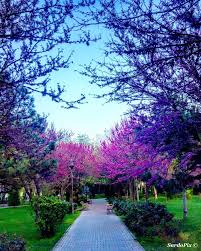

Описание композиций.
Вивальди "Времена года"-"Зима: невероятно трогательная композиция.
Прослушав её думаем множество людей невольно пробьёт на слёзы.
Мелодия быстрая и висёлая словно чья-то взволнованная душа долго ожидавшая зиму бежит по улице глядя на снежки медленно парящие в воздухе.
Чайковский Времена года Март песня жаворонка напротив довольно печальная и медленная композиция.
Мелодия протяжно невероятно приятно на слух.
Передаётся та самая тоска по зиме, что бывает у многих в первый месяц весны.
Но что с вопросами на которые мы собирались ответить?
На самом деле музыка о природе не исчерпает себя, из-за разного видения разных авторов природы.
На самом деле она слишком многогранна чтобы судить по ней уверенно.
Тоже самое с её характером, характер этой музыки невероятно многообразен и сказать про весь вид музыки невозможно.

ПРЕДЫДУЩАЯ СТРАНИЦА
СЛЕДУЮЩАЯ СТРАНИЦА